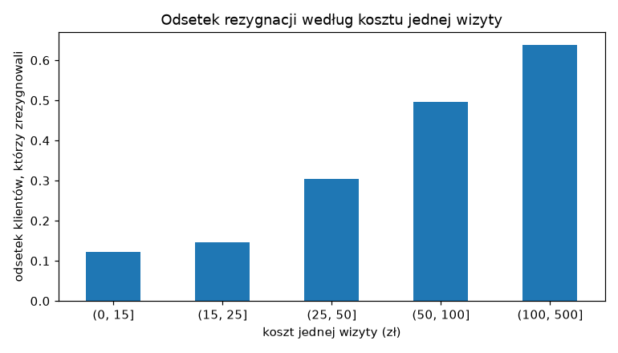

Zajęcia 5#
Feature engineering — cechy, które mówią więcej#
Do tej pory brałeś kolumny takie, jakie przyszły z systemu, i najwyżej je czyściłeś. Tymczasem model widzi tylko liczby w kolumnach. Nie wie, że opłata 199 zł przy jednej wizycie w miesiącu to pieniądze wyrzucone w błoto, a klient z 10 wizytami za te same 199 zł robi świetny interes. Ty to wiesz — i możesz mu to powiedzieć, dopisując nową kolumnę.
To jest feature engineering (inżynieria cech): budowanie z danych, które już masz, nowych cech, które lepiej opisują problem. Ilorazy, progi, kategorie zamienione na liczby, podsumowania z innych tabel. W projektach na danych tabelarycznych to zwykle daje więcej niż zamiana modelu na „mądrzejszy" — i za godzinę na Uczeniu głębokim sprawdzisz to na własnych liczbach.
Po dzisiejszych zajęciach będziesz w stanie:
- wyjaśnić, czym jest cecha i feature engineering,
- sprawdzić, czy cecha mówi coś o zmiennej celu —
corrwithi odsetek w przedziałach, - budować cechy z liczb: ilorazy i flagi,
- zamieniać kategorie na liczby — mapowaniem
map(gdy jest porządek) i kodowaniem one-hotget_dummies(gdy go nie ma), - budować cechy z tabeli zdarzeń i z dat,
- rozpoznać wyciek danych — cechę, której nie znałbyś w chwili decyzji.
Przykłady z zajęć w Colabie
Cały materiał z tej strony jest też w gotowym notatniku — z kodem do uruchomienia. Otwórz go i uruchamiaj komórki po kolei, czytając materiał. Żeby zachować swoje zmiany, zapisz kopię: Plik → Zapisz kopię na Dysku.

Gdzie jesteśmy
W workflow projektu z pierwszych zajęć to ostatni krok przygotowania danych — tuż przed modelem. Dane są już czyste (zajęcia 2), obejrzane (zajęcia 3) i zebrane w jedną tabelę (zajęcia 4). Teraz robimy z nich tabelę, z której model nauczy się jak najwięcej. Ćwiczymy na siłowni, w zadaniu wracamy do MeritoBanku — a za godzinę na Uczeniu głębokim Twoje cechy trafią do pierwszej sieci neuronowej.
Plan na dziś#
| Blok | Czas |
|---|---|
| Czym jest cecha i jak sprawdzić, czy coś mówi | 5 min |
| Cechy z liczb — ilorazy i flagi | 10 min |
Kategorie na liczby — map i one-hot |
10 min |
| Cechy z tabeli zdarzeń i z dat | 10 min |
| Wyciek danych i gotowa tabela cech | 7 min |
| Ściągawka | 3 min |
| Zadanie 5 | 45 min |
Cecha i jak ją ocenić#
Dane, na których pracujemy#
Znowu siłownia — wyczyszczona wersja z zajęć 3 i 4:
import pandas as pd
import matplotlib.pyplot as plt
URL = "https://kubzal.github.io/wsb-merito/semestr_zimowy_2026_27/uczenie_glebokie/dane/silownia_czyste.csv"
df = pd.read_csv(URL)
df.head(3)
klient_id wiek miasto typ_karnetu oplata_mies staz_mies wizyty_mies zgloszenia zrezygnowal
0 K1342 45 Gdańsk Basic 99.0 20 1.2 0 1
1 K0802 34 Poznań Standard 119.0 17 7.6 1 0
2 K0240 34 Warszawa Basic 99.0 5 5.1 1 0
Cecha (feature) to każda kolumna, na podstawie której model ma coś
przewidzieć — tu: wiek, opłata, staż, wizyty, zgłoszenia, miasto, typ karnetu.
Zmienna celu to to, co przewidujemy — zrezygnowal. Znasz to z pierwszych
zajęć z Uczenia głębokiego.
Czy cecha coś mówi?#
Zanim zaczniemy dopisywać kolumny, potrzebujemy miary, czy nowa kolumna jest
lepsza od starych. Najprostsza to korelacja z zajęć 3 — tym razem liczona
między każdą cechą a zmienną celu. Robi to jedna metoda, corrwith:
liczbowe = ["wiek", "oplata_mies", "staz_mies", "wizyty_mies", "zgloszenia"]
df[liczbowe].corrwith(df["zrezygnowal"]).round(3)
Czytasz to tak samo jak mapę ciepła: znak to kierunek (ujemna — im więcej, tym rzadziej klient odchodzi), wartość bezwzględna to siła. Najmocniejsze są dziś staż i wizyty, ok. 0.23. To jest poprzeczka — nowa cecha jest warta uwagi, jeśli ją przeskoczy.
Korelacja to pierwsze sito, nie wyrok
Korelacja widzi tylko zależności typu „im więcej, tym więcej". Cecha o korelacji bliskiej zera może być przydatna, jeśli ryzyko rośnie np. tylko powyżej jakiegoś progu. Dlatego do korelacji zawsze warto dołożyć odsetek w przedziałach — jak za chwilę.
Cechy z liczb#
Iloraz — ile kosztuje jedna wizyta#
Opłata sama w sobie mówi niewiele: 199 zł to dużo czy mało? Zależy, ile razy klient przychodzi. Zróbmy cechę, która łączy obie informacje — koszt jednej wizyty:
df["koszt_wizyty"] = df["oplata_mies"] / df["wizyty_mies"]
df[["oplata_mies", "wizyty_mies", "koszt_wizyty"]].head(3).round(1)
Klient z pierwszego wiersza przychodzi nieco ponad raz w miesiącu, więc za jedno wejście płaci 82.50 zł — prawie tyle, co inni za cały miesiąc. Czy nowa cecha przeskakuje poprzeczkę?
Przeskakuje i to wyraźnie: 0.30 wobec 0.13 i 0.23 dla kolumn, z których powstała. Zobaczmy to w przedziałach:
przedzialy = pd.cut(df["koszt_wizyty"], bins=[0, 15, 25, 50, 100, 500])
df.groupby(przedzialy, observed=True)["zrezygnowal"].agg(["count", "mean"]).round(3)
count mean
koszt_wizyty
(0, 15] 444 0.122
(15, 25] 413 0.145
(25, 50] 433 0.305
(50, 100] 147 0.497
(100, 500] 47 0.638
df.groupby(przedzialy, observed=True)["zrezygnowal"].mean().plot(
kind="bar", title="Odsetek rezygnacji według kosztu jednej wizyty")
plt.xticks(rotation=0)
plt.xlabel("koszt jednej wizyty (zł)")
plt.ylabel("odsetek klientów, którzy zrezygnowali")

Kto płaci za wizytę do 25 zł, odchodzi w 12–15% przypadków. Kto płaci ponad 100 zł — prawie w dwóch przypadkach na trzy. To jest informacja, której nie było w żadnej pojedynczej kolumnie: model, który dostaje osobno opłatę i wizyty, musiałby sam „wymyślić" dzielenie. Prosty model tego nie umie, a sieć neuronowa — tylko jeśli ma dość danych.
Dzielenie przez zero
Klient z zerową liczbą wizyt dostałby koszt wizyty inf (nieskończoność)
i popsułby każdą średnią. W naszych danych najmniejsza wartość to 0.4, ale
zawsze to sprawdzaj: (df["wizyty_mies"] == 0).sum(). Jeśli zera są,
zdecyduj, co znaczą — np. df["wizyty_mies"].clip(lower=0.5) traktuje
„zero wizyt" jak „pół wizyty", więc koszt wychodzi wysoki, ale skończony.
Flaga — tak albo nie#
Czasem ważniejsze od dokładnej wartości jest to, czy przekroczyła próg. Na zajęciach 4 wyszło, że w pierwszym półroczu odchodzi prawie 40% klientów. Zróbmy z tego cechę — flagę 0/1:
df["nowy_klient"] = (df["staz_mies"] <= 6).astype(int)
df.groupby("nowy_klient")["zrezygnowal"].agg(["count", "mean"]).round(3)
Porównanie df["staz_mies"] <= 6 daje serię True/False, a astype(int)
zamienia ją na 1/0 — tak lubią modele. Flaga przydaje się wtedy, gdy ryzyko
skacze na progu, a nie zmienia się równo. Model liczący ważoną sumę (jak
regresja logistyczna) sam takiego skoku nie zapisze — ze stażu w miesiącach
wyjdzie mu tylko „im dłużej, tym lepiej, zawsze w tym samym tempie".
A logarytm?
Kwoty — dochody, ceny domów, kwoty kredytów — mają zwykle długi prawy ogon:
większość klientów zarabia kilka tysięcy, kilku zarabia kilkadziesiąt.
Częstą cechą jest wtedy logarytm, np.log(df["dochod"]), który ten ogon
„ściska". Na siłowni nie ma takich kolumn, więc dziś go tylko odnotowujemy.
Kategorie na liczby#
Regresja logistyczna i sieć neuronowa liczą ważoną sumę cech. Nie da się pomnożyć „Warszawy" przez wagę 0.3. Kolumny tekstowe trzeba więc zamienić na liczby — i sposób zależy od tego, czy kategorie mają porządek.
Kategorie z porządkiem — map#
Karnety mają naturalną kolejność: Basic < Standard < Premium. Zapisujemy ją słownikiem:
df["karnet_poziom"] = df["typ_karnetu"].map({"Basic": 1, "Standard": 2, "Premium": 3})
df[["typ_karnetu", "karnet_poziom"]].drop_duplicates()
Jeśli po map pojawią się braki (df["karnet_poziom"].isna().sum()), to
w danych jest wartość spoza słownika — np. "premium " ze spacją. Wracasz
wtedy do ujednolicania tekstu z zajęć 2.
Kategorie bez porządku — one-hot#
Z miastami tak się nie da. Gdyby Warszawa była 1, a Kraków 2, model uznałby, że Kraków to „dwa razy Warszawa", a Gdańsk (3) leży „dalej" od Warszawy niż Kraków. Bzdura. Zamiast tego każde miasto dostaje własną kolumnę 0/1 — to jest kodowanie one-hot (one-hot encoding, „jedna gorąca"):
miasto_Gdańsk miasto_Kraków miasto_Poznań miasto_Warszawa miasto_Wrocław
0 1 0 0 0 0
1 0 0 1 0 0
2 0 0 0 1 0
W każdym wierszu jest dokładnie jedna jedynka — w kolumnie miasta klienta.
prefix dokleja przedrostek do nazw kolumn, a dtype=int daje zera
i jedynki zamiast False/True. Nowe kolumny doklejamy obok tabeli —
pd.concat z axis=1 (z zajęć 4 znasz go w wersji „jedna pod drugą"):
Pięć miast — pięć nowych kolumn. Oryginalną kolumnę miasto zostawiamy, żeby
dało się po niej grupować — do modelu po prostu jej nie weźmiemy.
One-hot nie na wszystko
- Kategorie o tysiącach wartości (identyfikator klienta, kod pocztowy)
dałyby tysiące kolumn, z których każda opisuje kilka osób.
klient_idw ogóle nie jest cechą — to tylko etykieta wiersza. - Nowe kategorie. Pamiętasz Łódź z zajęć 4? Model nauczony na pięciu
miastach nie ma kolumny
miasto_Łódź. Gdy pojawi się pierwszy klient z Łodzi, dostanie same zera — model potraktuje go jak „miasto przeciętne".
Cechy z tabeli zdarzeń#
Nie tylko „ile", ale „jakie"#
Kolumna zgloszenia mówi, ile zgłoszeń złożył klient. Na zajęciach 4 wyszło
jednak, że ważniejsze jest, jakie: na sprzęt narzekają ci, którzy chodzą,
a na obsługę i płatności — ci, którzy zaraz odejdą. Zróbmy z tego cechy.
Najpierw liczba zgłoszeń każdej kategorii dla każdego klienta — groupby po
dwóch kolumnach i unstack, jak na zajęciach 4:
URL_ZGL = "https://kubzal.github.io/wsb-merito/semestr_zimowy_2026_27/data_science_w_pythonie/dane/zgloszenia_2026.csv"
zgl = pd.read_csv(URL_ZGL)
kategorie = zgl.groupby(["klient_id", "kategoria"]).size().unstack(fill_value=0)
kategorie = kategorie.add_prefix("zgl_")
kategorie.head(3)
kategoria zgl_czystość zgl_obsługa zgl_płatności zgl_sprzęt zgl_tłok
klient_id
K0005 1 0 0 0 1
K0006 1 0 0 0 0
K0007 0 0 1 0 1
unstack(fill_value=0) od razu wpisuje zero tam, gdzie klient nie miał
zgłoszenia danej kategorii, a add_prefix dokleja przedrostek do nazw kolumn.
Teraz łączymy z klientami — left, a klientom bez żadnego zgłoszenia
wpisujemy zera:
kolumny_zgl = list(kategorie.columns)
df = df.merge(kategorie.reset_index(), on="klient_id", how="left")
df[kolumny_zgl] = df[kolumny_zgl].fillna(0).astype(int)
print(df.shape)
df[kolumny_zgl + ["zgloszenia"]].corrwith(df["zrezygnowal"]).round(3)
(1484, 22)
zgl_czystość 0.007
zgl_obsługa 0.188
zgl_płatności 0.188
zgl_sprzęt -0.044
zgl_tłok 0.068
zgloszenia 0.160
dtype: float64
Zgłoszenia o obsłudze i płatnościach mają z rezygnacją korelację 0.19 każde — więcej niż wszystkie zgłoszenia razem (0.16). Zgłoszenia o sprzęcie mają nawet znak ujemny. Złóżmy obie „złe" kategorie w jedną cechę:
df["zgl_powazne"] = df["zgl_obsługa"] + df["zgl_płatności"]
print("korelacja:", round(df["zgl_powazne"].corr(df["zrezygnowal"]), 3))
df.groupby(df["zgl_powazne"].clip(upper=2))["zrezygnowal"].agg(["count", "mean"]).round(3)
Korelacja 0.26 — prawie dwa razy więcej niż sama liczba zgłoszeń.
clip(upper=2) zamienia wszystko powyżej 2 na 2, więc ostatni wiersz czytaj
„2 i więcej". Klient bez poważnych zgłoszeń odchodzi w 19% przypadków,
z dwoma — w 64%.
Cechy z dat#
Dziennik zgłoszeń ma też datę. Z daty da się wyciągnąć wiele cech — ale model
nie rozumie napisu "2026-03-14". Najpierw zamieniamy go na datę
pd.to_datetime (zajęcia 2), a potem wyciągamy liczby:
| Chcę… | Kod |
|---|---|
| miesiąc (1–12) | zgl["data"].dt.month |
| dzień tygodnia (0 = poniedziałek) | zgl["data"].dt.day_of_week |
| czy weekend | (zgl["data"].dt.day_of_week >= 5).astype(int) |
| ile dni minęło | (pd.Timestamp("2026-09-30") - zgl["data"]).dt.days |
Dla nas najciekawsze jest ostatnie: ile dni minęło od ostatniego zgłoszenia klienta. Dane kończą się 30 września 2026, więc to jest nasze „dziś":
zgl["data"] = pd.to_datetime(zgl["data"])
ostatnie = zgl.groupby("klient_id")["data"].max()
dni = (pd.Timestamp("2026-09-30") - ostatnie).dt.days
df = df.merge(dni.rename("dni_od_zgloszenia").reset_index(), on="klient_id", how="left")
print("brak zgłoszeń:", df["dni_od_zgloszenia"].isna().sum())
Znowu 663 braki — klienci bez zgłoszeń. Tym razem nie uzupełniamy zerem: zero dni znaczyłoby „zgłosił się dziś", czyli dokładnie odwrotnie. Uczciwiej wpisać dużą liczbę — „dawno albo nigdy" — np. 365:
df["dni_od_zgloszenia"] = df["dni_od_zgloszenia"].fillna(365)
przedzialy_dni = pd.cut(df["dni_od_zgloszenia"], bins=[-1, 30, 90, 180, 300, 365])
df.groupby(przedzialy_dni, observed=True)["zrezygnowal"].agg(["count", "mean"]).round(3)
count mean
dni_od_zgloszenia
(-1, 30] 135 0.333
(30, 90] 212 0.307
(90, 180] 260 0.238
(180, 300] 214 0.252
(300, 365] 663 0.186
Świeże zgłoszenie (ostatni miesiąc) to 33% rezygnacji, stare — 24–25%, brak zgłoszeń — 19%. Efekt jest, ale słabszy niż przy kategoriach. Tak też bywa: nie każda cecha, która brzmi sensownie, okazuje się mocna — dlatego każdą się sprawdza.
Uzupełnianie braków po złączeniu
Za każdym razem zapytaj, co znaczy brak w tej kolumnie. Brak zgłoszeń
w liczbie zgłoszeń to zero. Brak zgłoszeń w „dniach od zgłoszenia" to
„bardzo dawno". Brak wieku w ankiecie to „nie wiemy" — i wtedy mediana.
Ta sama metoda fillna, trzy różne decyzje.
Wyciek danych#
Cecha za dobra, żeby była prawdziwa#
Wyobraź sobie, że dział IT dorzuca do tabeli kolumnę wizyty_pazdziernik —
liczbę wizyt w październiku. Korelacja z rezygnacją wychodzi gigantyczna.
Nic dziwnego: kto zrezygnował we wrześniu, w październiku ma zero wizyt.
Model z taką cechą miałby świetne wyniki w notatniku i byłby zupełnie
bezużyteczny w praktyce — bo chcemy przewidzieć rezygnację, zanim się
zdarzy, a wtedy październikowych wizyt jeszcze nie ma.
To jest wyciek danych (data leakage): cecha, która zawiera informację z przyszłości albo wprost z odpowiedzi. Na zajęciach 3 z Uczenia głębokiego poznałeś wyciek przy skalowaniu. Ten jest groźniejszy, bo nie widać go w kodzie — widać go dopiero, gdy zapytasz:
Czy znałbym tę wartość w chwili, w której model ma podjąć decyzję?
| Cecha | Wyciek? | Dlaczego |
|---|---|---|
| liczba wizyt w ostatnim miesiącu przed decyzją | nie | znamy ją w chwili decyzji |
| wizyty w miesiącu po dacie, dla której przewidujemy | tak | to już przyszłość |
| powód rezygnacji z ankiety wyjściowej | tak | istnieje tylko dla tych, którzy odeszli |
| zgłoszenie „chcę anulować karnet" | tak | to właściwie sama odpowiedź |
| liczba zgłoszeń o płatnościach | raczej nie | ale warto spytać, czy nie powstają przy rezygnacji |
Za dobre, żeby było prawdziwe
Jeśli jedna cecha ma z celem korelację 0.9 albo model nagle osiąga 99% accuracy — nie świętuj, tylko szukaj wycieku. W prawdziwych danych tak mocnych cech prawie nie ma. W zadaniu zobaczysz taki przypadek na własne oczy.
Gotowa tabela cech#
Na koniec zbieramy wszystko, co ma trafić do modelu. Tabela do modelu ma cztery cechy: jeden wiersz na klienta, same liczby, żadnych braków, żadnego wycieku:
cechy = (liczbowe
+ ["koszt_wizyty", "nowy_klient", "karnet_poziom", "zgl_powazne", "dni_od_zgloszenia"]
+ list(miasta.columns))
gotowe = df[cechy + ["zrezygnowal"]]
print(gotowe.shape, "| braków:", gotowe.isna().sum().sum())
gotowe.to_csv("silownia_cechy.csv", index=False)
Z 5 cech liczbowych zrobiło się 15. Tekstowe kolumny (miasto,
typ_karnetu) i klient_id zostały poza tabelą — ich informacja siedzi
w kolumnach liczbowych. Plik silownia_cechy.csv znajdziesz w Colabie
w panelu Pliki po lewej.
Więcej cech to nie zawsze lepiej
Każda cecha to dla modelu kolejna rzecz do nauczenia się, a danych mamy
tyle samo. Cechy słabe albo powtarzające to samo (zgloszenia
i zgl_powazne, oplata_mies i karnet_poziom) mogą modelowi bardziej
przeszkodzić niż pomóc — zwłaszcza dużemu. Co z tego wychodzi w praktyce,
zobaczysz za godzinę.
Ściągawka#
| Chcę… | Kod |
|---|---|
| korelacja każdej cechy z celem | df[cechy].corrwith(df["cel"]) |
| korelacja jednej kolumny z celem | df["kol"].corr(df["cel"]) |
| iloraz dwóch kolumn | df["nowa"] = df["a"] / df["b"] |
| sprawdzić zera przed dzieleniem | (df["b"] == 0).sum() |
| flaga 0/1 | df["flaga"] = (df["kol"] > prog).astype(int) |
| kategoria z porządkiem → liczba | df["kol"].map({"niski": 1, "średni": 2, "wysoki": 3}) |
| kategoria bez porządku → one-hot | pd.get_dummies(df["kol"], prefix="kol", dtype=int) |
| dokleić kolumny obok | pd.concat([df, nowe_kolumny], axis=1) |
| zdarzenia → liczba w każdej kategorii | zd.groupby(["id", "kategoria"]).size().unstack(fill_value=0) |
| przedrostek w nazwach kolumn | tabela.add_prefix("zgl_") |
| obciąć wartości z góry | df["kol"].clip(upper=2) |
| tekst → data | pd.to_datetime(df["data"]) |
| miesiąc / dzień tygodnia | df["data"].dt.month, df["data"].dt.day_of_week |
| ile dni minęło | (pd.Timestamp("2026-09-30") - df["data"]).dt.days |
| odsetek celu w przedziałach cechy | df.groupby(pd.cut(df["kol"], bins=[...]), observed=True)["cel"].mean() |
| zapisać tabelę do pliku | df.to_csv("plik.csv", index=False) |
Zadanie 5 — Ile z pensji idzie na ratę (6 pkt)#
Czas: maks. 45 minut
Środowisko: Google Colab
Oddanie: notatnik .ipynb na Moodle
Dział ryzyka MeritoBanku buduje nowy model oceny wniosków kredytowych. Analitycy od dawna powtarzają, że ważna jest nie sama kwota kredytu ani sam dochód, tylko to, jaką część pensji klient oddaje co miesiąc na ratę. Tej kolumny w żadnym systemie nie ma — Twoim zadaniem jest ją zbudować, sprawdzić, czy analitycy mają rację, i przygotować tabelę cech dla modelu.
Na początku notatnika wpisz swój numer albumu — od niego zależy, który cel kredytu analizujesz w części 1:
NR_ALBUMU = 123456 # ← wpisz swój numer albumu
CELE = ["gotówkowy", "samochodowy", "remont", "konsolidacyjny"]
MOJ_CEL = CELE[NR_ALBUMU % 4]
print("Mój cel kredytu:", MOJ_CEL)
URL_KREDYTY = "https://kubzal.github.io/wsb-merito/semestr_zimowy_2026_27/data_science_w_pythonie/dane/kredyty_2026.csv"
URL_SPLATY = "https://kubzal.github.io/wsb-merito/semestr_zimowy_2026_27/data_science_w_pythonie/dane/splaty_2026.csv"
Obie tabele znasz z zajęć 3 i 4.
Rób części po kolei i pokaż mi wynik każdej części, gdy będzie gotowa.
Część 1 — obciążenie ratą (ok. 20 min)#
- Wczytaj kredyty i dodaj dwie kolumny:
rata— miesięczna rata w przybliżeniu, czyli kwota kredytu podzielona przez okres (bez odsetek), orazobciazenie— jaka część miesięcznego dochodu idzie na ratę. Jaką część dochodu oddaje na ratę typowy (medianowy) klient? Ilu klientów oddaje na ratę ponad połowę dochodu? - Jedną linijką policz korelację z
niesplaconydla kwoty kredytu, okresu, dochodu, raty i obciążenia. W komórce tekstowej odpowiedz: czy nowe cechy mówią o ryzyku więcej niż kolumny, z których powstały? - Potnij obciążenie na przedziały
[0, 0.1, 0.2, 0.3, 0.5, 5]i policz liczbę klientów i odsetek niespłaconych w każdym przedziale — dla całego banku (z wykresem słupkowym odsetka) i osobno dla Twojego celu kredytu. W komórce tekstowej: od jakiego obciążenia ryzyko wyraźnie rośnie w całym banku, a od jakiego w Twoim celu? Czy wynikom dla najmniejszych grup można ufać?
Część 2 — kategorie, wyciek i tabela cech (ok. 25 min)#
- Zakoduj
cel_kredytumetodą one-hot (przedrostekcel) i doklej nowe kolumny do kredytów. Dodaj flagęmial_opoznienia— 1, jeśli klient miał w ostatnim roku choć jedno opóźnienie. Policz korelację zniesplaconydla kolumn celu, flagi iopoznienia_12m. W komórce tekstowej: który cel jest najbardziej ryzykowny? Czy flaga mówi o ryzyku więcej niż liczba opóźnień? - Streść spłaty do jednego wiersza na klienta — liczba wpłat i największe
opóźnienie — i dołącz do kredytów tak, żeby nie zgubić żadnego kredytu
(brak wpłat = 0 wpłat). Policz korelację obu nowych kolumn z
niesplacony. W komórce tekstowej: czy dział ryzyka może użyć tych cech w modelu, który ocenia nowe wnioski kredytowe? Dlaczego? - Złóż tabelę cech dla modelu: same kolumny liczbowe, bez identyfikatora,
bez tekstu i bez wycieku, plus
niesplaconyna końcu. Wypisz jej kształt, sprawdź, że nie ma braków, i zapisz ją do plikukredyty_cechy.csv. W komórce tekstowej wypisz, których kolumn nie wziąłeś i dlaczego.
Wskazówki#
- Obciążenie to iloraz, tak jak koszt wizyty w notatkach. Wynik 0.25 znaczy,
że rata to ćwierć dochodu. Mediana:
kr["obciazenie"].median(), liczba klientów powyżej progu:(kr["obciazenie"] > 0.5).sum(). - Korelacja z celem kilku kolumn naraz:
kr[lista_kolumn].corrwith(kr["niesplacony"]). - Odsetek w przedziałach to przykład z sekcji „Iloraz — ile kosztuje jedna
wizyta". Dla Twojego celu najpierw filtr
kr[kr["cel_kredytu"] == MOJ_CEL], potem to samo. - Pamiętaj o ostrzeżeniu „Mała grupa, duże liczby" z zajęć 4 — liczebność przedziału jest tak samo ważna jak odsetek.
- One-hot i doklejanie kolumn:
pd.get_dummies(..., prefix="cel", dtype=int), potempd.concat([kr, cele], axis=1). Listę nowych kolumn masz wlist(cele.columns). - Streszczenie spłat i złączenie robiłeś w zadaniu 4 —
groupby,agg,reset_index,merge(..., how="left"),fillna(0). Sprawdźshape. - Przy wycieku zadaj pytanie z notatek: czy znałbym tę wartość w chwili, gdy klient składa wniosek?
- Tabela cech:
kr[lista_cech + ["niesplacony"]]. Braki:.isna().sum().sum().
Punktacja (6 pkt)#
| Punkty | Za co |
|---|---|
| 6 pkt | obie części zrobione na zajęciach i pokazane prowadzącemu |
| 4 pkt | jedna z dwóch części zrobiona na zajęciach |
| 2 pkt | zadanie dokończone po zajęciach i wysłane na Moodle w terminie |
| 0 pkt | brak rozwiązania albo wysłane po terminie |
Termin przesłania na Moodle: dzień przed kolejnymi zajęciami.
Serio, róbcie to na zajęciach
Te same 45 minut pracy jest warte 6 pkt tu i teraz albo 2 pkt w domu. Przez cały semestr robi to różnicę 32 punktów, czyli całej oceny w górę lub w dół.